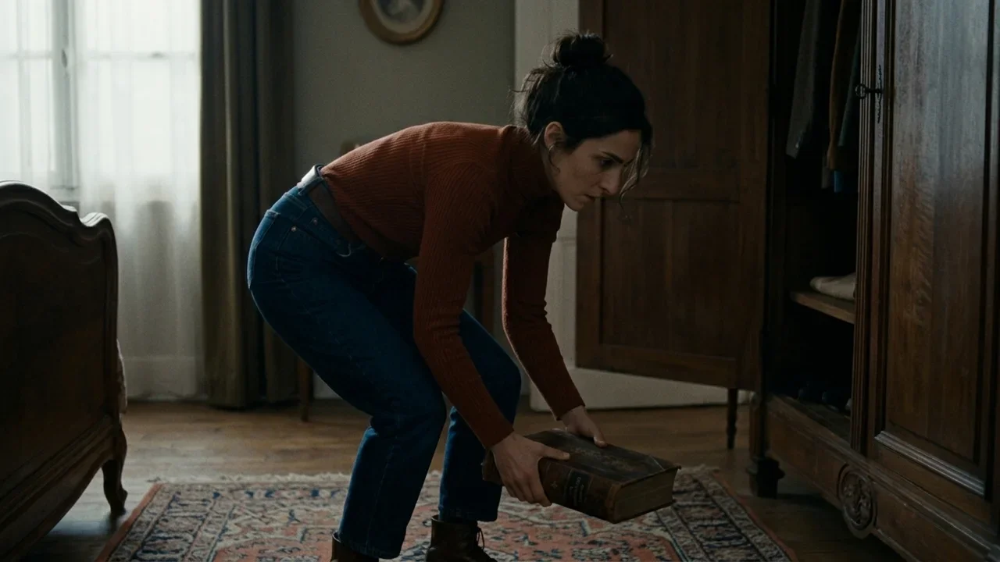
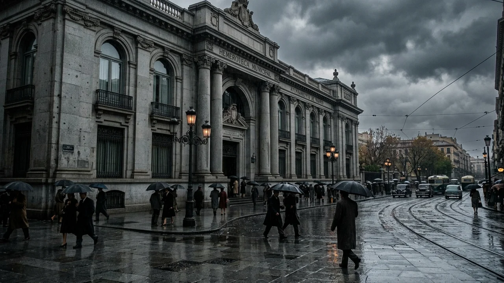
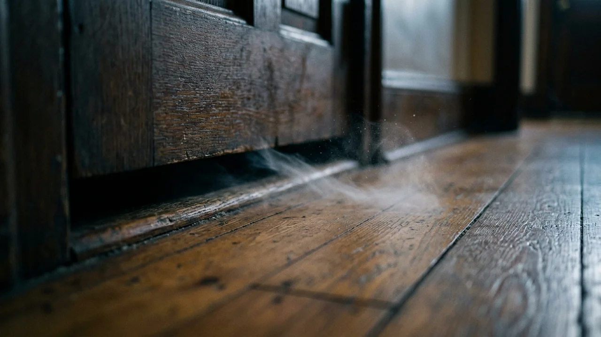
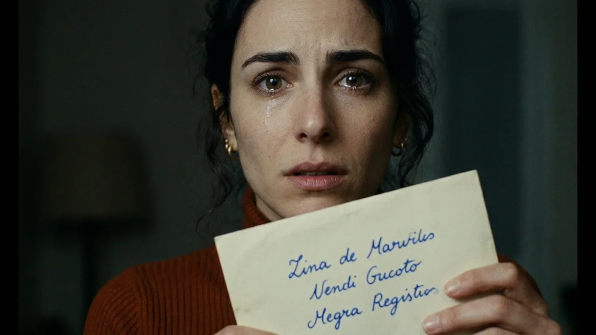

El olor a barniz y a madera encerada todavía flotaba en el zaguán cuando el camión de la mudanza arrancó, dejando a Clara sola con sus cajas en medio del pasillo.
El piso era el cuarto derecha de una finca antigua en Santa Engracia: techos altos con molduras, tarima de pino melis que crujía bajo los botines y un mirador hacia las acacias. El alquiler costaba la mitad de lo habitual en Chamberí, una ganga que el administrador justificó con las prisas de unos herederos lejanos.
Al cerrar la puerta de roble y pasar el cerrojo de latón, un roce sutil atrajo su atención hacia el suelo.
Bajo la rendija del umbral descansaba un sobre alargado de papel verjurado, sin franqueo ni remite.
Clara lo recogió. Era un papel grueso, idéntico al que utilizaba en su taller de encuadernación para restaurar guardas del siglo diecinueve. Al girarlo descubrió tres líneas manuscritas en tinta azul ultramar:
*Doña Rosario bajará a tirar la basura a las diez y cuarto con una bata azul. Te pedirá tres cucharadas de azúcar blanco porque la tienda de la esquina ha cerrado por reforma. No le prestes la taza de peltre.*
Clara frunció el ceño. Se acercó a la ventana para examinar el trazo con la luz del mediodía.
La caligrafía era inconfundible. Las tildes en lágrima, la inclinación a la derecha, la barra de la te alargada en un látigo y esa ele de bucle estrecho que solo ella dibujaba así desde niña. Era su letra. No una imitación: su propio pulso, con el temblor característico de su muñeca tras horas batiendo cola.
—Una broma idiota —murmuró, arrugando la frente.
Pensó en Martín, su antiguo compañero de taller. Dejó la cuartilla sobre la repisa y se dedicó a desembalar hasta la noche.
A las diez y doce, mientras esperaba que hirviera el cazo de los fideos, unos pasos resonaron en el rellano.
Segundos después sonaron dos golpes discretos en la madera.
Clara abrió con la cuchara en la mano. Al otro lado estaba la vecina del tercero: una mujer menuda de unos setenta años, con pelo blanco en redecilla y una bata de guatiné azul cobalto tan viva que brillaba bajo la bombilla.
—Buenas noches, vecina —dijo la anciana con sonrisa tímida—. Perdone la hora, soy Rosario, del tercero. Iba a bajar la basura y he visto que no me queda azúcar para la manzanilla. La tienda de Paco está en obras y no abre hasta el lunes. ¿Tendría tres cucharadas que le sobren?
A Clara se le heló la sangre en el estómago.
Miró la bata azul, la sonrisa afable y las manos vacías que esperaban un cuenco.
—Sí... claro —atinó a responder, con la voz en un hilo—. Pase, por favor.
Entró en la cocina con las piernas rígidas. En el aparador tenía un azucarero de loza y, a su lado, la vieja taza de peltre que su abuela le regaló al entrar en la facultad. La mano se le fue hacia el asa metálica, pero se detuvo con los dedos temblorosos a un milímetro del borde.
Respiró hondo, cogió una taza de porcelana blanca, la llenó de azúcar y regresó a la puerta.
—Muchísimas gracias, hija —dijo Doña Rosario al recogerla—. Da gusto tener gente joven en la finca. Hacía mucho tiempo que este cuarto no se abría.
—¿Mucho tiempo? —preguntó Clara—. El administrador me dijo que los anteriores inquilinos se marcharon a finales de invierno.
Doña Rosario vaciló. La sonrisa se le borró de los labios y sus ojos recorrieron el pasillo con aprensión.
—Los administradores dicen lo que conviene para firmar, muchacha. Descanse. Y no se quede hasta tarde trabajando, que en esta casa los ruidos viajan por el tiro de la chimenea.
La segunda carta apareció tres días más tarde en el buzón.
No tenía matasellos. Estaba doblada en cuatro pliegues y escrita con la misma tinta ultramar que Clara guardaba en el escritorio:
*A las cuatro de la tarde, cuando vayas a sacar la enciclopedia del armario del dormitorio, se te resbalará el tomo dos y romperá el rodapié de yeso. Detrás encontrarás un dedal de plata con tres iniciales que no son las tuyas.*
Clara subió los tramos de escalera con el corazón acelerado.
Fue al armario y miró la balda superior. Con lentitud deliberada cogió el tomo dos con ambas manos y lo bajó al suelo sin un rasguño, depositándolo sobre la alfombra.
—¿Lo ves? —dijo al vacío de la alcoba—. No se ha roto nada.
Se arrodilló junto al rodapié para comprobar que el zócalo estaba intacto. El yeso no tenía fisuras, pero al apoyar la palma contra la madera del fondo notó que una tabla sonaba a hueco.
Tiró de la moldura con una espátula. La madera cedió con un chasquido.
En el hueco entre dos ladrillos no había escombros. Había un dedal diminuto de plata maciza, ennegrecido por los años, con tres letras grabadas en la corona: *E. S. M.*
Clara se sentó sobre los talones, sintiendo que la habitación entera empezaba a girar.

Fue a su mesa. Sacó una lupa y la libreta donde anotaba las fórmulas de barniz. Colocó la carta junto a sus notas del día anterior. Comparó los trazos milímetro a milímetro. La misma presión al iniciar la ese. El mismo cierre de la a. La misma inclinación de cuarenta y cinco grados en los puntos.
No era una imitación. Era imposible que otra persona reprodujera la curvatura que la fractura de su muñeca de niña imprimía en el papel.
Alguien no solo escribía con su letra: alguien vivía sus gestos antes de que ella los pensara.
Aquella noche no pudo dormir.
A las dos de la madrugada fue a la mesa del salón y cogió una cuartilla limpia. Mojó la pluma en tinta ultramar y escribió una sola frase en el centro:
*¿Quién eres y por qué estás en mi casa?*
Dejó la cuartilla sobre el tapete verde, apagó la luz y se encerró en el dormitorio con el pestillo echado.
A las siete de la mañana, la luz lechosa del alba entraba por el mirador.
Clara abrió la puerta conteniendo el aliento. El salón estaba en silencio. La cuartilla seguía sobre el terciopelo verde.
Pero al acercarse vio que el papel ya no estaba en blanco bajo su pregunta. Con su misma tinta y su caligrafía inclinada, una respuesta se extendía en tres renglones recién trazados:
*Soy la que vivió aquí antes que tú. Esta casa no olvida los cuerpos que la habitan. Tú tienes mis manos porque las paredes solo saben sostener una misma vida.*
Clara retrocedió, tapándose la boca con la mano.
Salió al descansillo y bajó aporreando la puerta de Doña Rosario.
La anciana tardó en abrir, frotándose los ojos hinchados por el sueño.
—Doña Rosario, tiene que decirme la verdad —suplicó Clara, sin aire—. ¿Quién vivía en el cuarto antes de alquilarlo yo? ¿Quién era la mujer del dedal?
La vecina la miró fijamente. Sus ojos recorrieron el rostro de Clara, deteniéndose en el lunar junto a la comisura del labio y en el mechón castaño sobre la sien. Un temblor visible agitó sus dedos.

—Se llamaba Elena —susurró Rosario—. Elena Soler. Era restauradora, como tú. Llegó hace siete años, sola. Trabajaba de noche con libros viejos.
—¿Y qué le pasó? —preguntó Clara con un nudo en la garganta—. El administrador dijo que se fue al norte.
—Una noche de invierno no volvió a salir —dijo la anciana, santiguándose—. La policía tiró la puerta porque salía olor a gas apagado. Dentro no había nadie. Las ventanas estaban atrancadas por dentro y la llave puesta en la cerradura. Desapareció sin llevarse el abrigo ni el bolso. Solo quedó una carta sobre la mesa del salón.
—¿Qué decía la carta?
Doña Rosario apretó los labios y negó con la cabeza:
—No la leí, hija. Se la llevó el juez. Pero Elena tenía tu misma voz cuando se asustaba. Tu misma voz y tu misma cara cansada de mirar papeles viejos. No te quedes en ese piso. Vete hoy mismo.
Clara no se marchó.
Pasó la tarde en la hemeroteca municipal, revisando microfilmes de sucesos de mil novecientos ochenta y nueve.
A las cinco y media encontró la reseña en un diario de sucesos:
*Misteriosa desaparición de una restauradora en Chamberí.*
Bajo el titular había una fotografía de carné reproducida con trama gruesa.
Clara acercó la lupa y el mundo se detuvo.
La mujer de la foto no se parecía a ella: era ella. La misma nariz recta, la distancia exacta entre los ojos avellana, el corte de pelo sobre los hombros y el lunar en la comisura del labio. Al pie figuraba el nombre oficial: *Elena Soler Morales. Veintinueve años de edad.*
Veintinueve años. La edad exacta que Clara había cumplido tres semanas antes de mudarse.
Salió a la calle bajo la lluvia fría de noviembre. Caminó sin rumbo por Alonso Cano, sintiendo que el asfalto la devolvía una y otra vez hacia la misma esquina, como si una gravedad invisible tirara de sus pasos para devolverla al portal de Santa Engracia.
Cuando abrió la puerta de su casa al filo de las ocho, la vivienda olía a cera de vela apagada.

Sobre la mesa del salón descansaba un nuevo sobre de papel verjurado.
Estaba abierto.
Dentro, una sola cuartilla aguardaba bajo la sombra de la lámpara:
*Mañana descubrirás por qué me fui. No abras la puerta cuando escuches los tres golpes. Si abres, la casa volverá a cerrarse sobre nosotras.*
La noche cayó sobre Madrid con un viento áspero que hacía crujir los cristales.
Clara no encendió la radio ni la luz. Se sentó en la butaca de orejas del salón, con una manta de lana, la linterna encendida en el regazo y la vista fija en la puerta.
Había echado los dos cerrojos de latón, la cadena de seguridad y había atravesado una silla pesada bajo el picaporte.
El reloj del pasillo dio las once, las doce y la medianoche con campanadas que resonaban en sus sienes.
A la una y siete de la madrugada, sonaron tres golpes.
Fueron tres golpes secos y pausados: *toc, toc, toc*.
La madera vibró bajo el impacto. Clara se puso en pie de un salto, con los dedos aferrados al respaldo de la butaca.
—¿Quién es? —gritó con un hilo de voz.
Desde el otro lado del umbral, una voz femenina respondió a través de la rendija.
Era su propia voz, con su mismo timbre exacto, su misma cadencia rota por el frío y el asma leve de su garganta al respirar aire helado:
—Clara... por favor... ábreme. Hace mucho frío aquí fuera. Se me han caído las llaves por el hueco del ascensor. Ábreme, solo quiero entrar a casa.
El pánico la paralizó como una descarga eléctrica.

La voz no solo sonaba como ella: suplicaba con las palabras exactas que Clara había pronunciado diez años atrás, una noche de helada en Salamanca cuando perdió las llaves de la pensión y pasó horas llorando en el descansillo.
—¡Tú no estás viva! —gritó Clara, retrocediendo—. ¡Tú desapareciste!
—Yo no desaparecí, Clara —suplicó la voz desde la madera, con un sollozo idéntico al suyo—. Estoy aquí. Abre la puerta. Si no abres, me quedaré atrapada en la escalera para siempre.
Clara retrocedió hacia el centro del salón. La linterna temblaba en su mano proyectando un círculo de luz frenético.
Al iluminar la mesa de centro, se detuvo en seco.
Sobre el tapete verde descansaba una última carta que no estaba allí hacía cinco minutos.
El papel era reciente; la tinta ultramar aún brillaba húmeda bajo la linterna. Con dedos que apenas respondían, Clara levantó la hoja y leyó las cuatro líneas escritas con su propia mano:
*Ahora ya sabes lo que me ocurrió. Yo también me senté en esa butaca. Yo también eché los cerrojos. Yo también escuché mi propia voz pidiendo auxilio desde el descansillo. Y cuando me acerqué a la mirilla para ver quién suplicaba... la que estaba fuera era yo.*
Un chasquido metálico resonó en la entrada.
El cerrojo de latón giró despacio, con un quejido suave de engranajes bien aceitados. La cadena de seguridad se descolgó sola de la ranura, cayendo con un tintineo sordo contra el marco.
La puerta comenzó a abrirse hacia adentro, milímetro a milímetro.
Desde el umbral oscuro de la escalera, una corriente de aire helado sopló sobre la nuca de Clara, trayendo consigo el aroma de su propio perfume de azahar y la sombra delgada de una mujer con jersey caldera que cruzaba el quicio.
A la mañana siguiente, cuando Doña Rosario subió con la taza de azúcar para devolverla, encontró la puerta del cuarto derecha abierta de par en par.
En el interior del piso no había desorden ni signos de violencia. Las cajas de la mudanza seguían apiladas en el pasillo, los libros permanecían intactos en sus baldas y en la cocina el cazo de los fideos reposaba frío sobre el fuego apagado.
De Clara Morales no había el menor rastro.
Tres semanas después, una furgoneta descargó tres maletas de viaje frente al portal de Santa Engracia.
La nueva inquilina, una muchacha de veintinueve años con el pelo castaño recogido en un moño y dedos finos de dibujante, firmó el contrato de alquiler en el zaguán con una sonrisa aliviada por el precio de la renta.
Al subir al cuarto derecha y cerrar la puerta tras de sí, un roce leve llamó su atención sobre el felpudo.
Bajo la rendija del umbral descansaba un sobre alargado de papel verjurado. La muchacha lo recogió con curiosidad y, al darle la vuelta, sintió un escalofrío en la nuca al descubrir tres líneas manuscritas con una caligrafía que reconoció de inmediato como la suya propia.